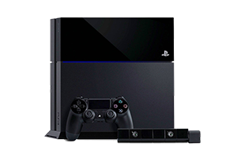
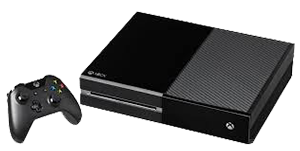
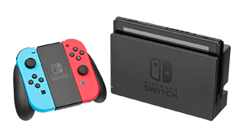

De achtste generatie video game consoles begon in 2012 toen de Wii U op de markt kwam. Echter begon de achtste generatie voor draagbare gameconsoles al in 2011 met de Nintendo 3DS. Bekende consoles zijn onder andere de Playstation 4, de Xbox-one en de Nintendo Switch. De generatie is nog steeds bezig op het moment van schrijven. Wanneer de negende generatie uitkomt is niet bekend.

De PlayStation 4 is een spelcomputer van Sony Interactive Entertainment die in Europa sinds 29 november 2013 verkrijgbaar is. De opvolger van de PlayStation 3 is op 20 februari 2013 aangekondigd in New York tijdens een persconferentie, die volledig in het teken stond van de nieuwe console. De PlayStation 4 maakt deel uit van de achtste generatie in de geschiedenis van de spelcomputer. In september 2016 heeft Sony een nieuwe versie van de PS4 uitgebracht, onder de naam PS4 Slim. Deze spelcomputer heeft echter geen veranderingen in de hardware, alleen is de behuizing slanker en is het systeem lichter. Naast deze nieuwe versie heeft Sony nog een derde versie van de PS4 uitgebracht, onder de naam PS4 Pro. Deze spelcomputer heeft in tegenstelling tot de PS4 Slim wel verbeteringen in de hardware, zoals een betere videokaart. De visuele verbeteringen van de PS4 Pro zijn onder andere dynamische 4K gaming en de snellere framerates.

Xbox One is een lijn van spelcomputers van de achtste generatie ontwikkeld door Microsoft.[4] De console werd aangekondigd in mei 2013. Het is de opvolger van Xbox 360 en de derde spelcomputer van de Xbox-familie. De spelcomputer werd in november 2013 uitgebracht in Noord-Amerika, delen van Europa, Australië en Brazilië en in september 2014 in Japan, China en overige Europese landen. Volgens Microsoft is het apparaat een "alles-in-één- entertainmentsysteem". De Xbox One-lijn concurreert vooral met consoles zoals Sony's PlayStation 4 en Nintendo's Wii U en Switch. In augustus 2016 bracht Microsoft een vernieuwd Xbox One-model uit, Xbox One S. Deze heeft een gestroomlijnd ontwerp en systeemeigen ondersteuning voor het afspelen en opschalen van 4K-video en HDR10. Xbox One S werd geprezen vanwege zijn kleinere formaat, visuele verbeteringen en het ontbreken van een externe voeding, maar er waren ook negatieve geluiden te horen vanwege het ontbreken van een systeemeigen Kinect-poort. In juni 2017 werd Xbox One X, een high-end-model, onthuld en deze werd uitgebracht in november. Xbox One X is voorzien van grote hardware-verbeteringen zodat games op 4K-resolutie kunnen worden gerenderd.

De Nintendo Switch is een spelcomputer van het Japanse bedrijf Nintendo die wereldwijd is uitgekomen op 3 maart 2017. Het systeem is een mix tussen een handheld en een home console. Nintendo maakt volgens eigen zeggen duidelijk dat de Switch in eerste instantie is gericht op thuisgebruik. De Switch is een spelconsole die zowel in de huiskamer op een groot scherm gebruikt kan worden, maar ook als mobiele spelcomputer. Aan weerszijden van de Switch zitten Joy-Con-controllers die als losse joysticks gebruikt kunnen worden. Zo kan er ook met twee spelers gelijktijdig gespeeld worden. De Switch is voorzien van een HD-scherm, is regioslot-vrij, en maakt gebruik van spelcartridges. Deze spelcartridges zijn vergelijkbaar met het formaat dat wordt gebruikt voor de Nintendo DS, 2DS en 3DS. De volledige lijst met technische specificaties is op 27 januari vrijgegeven door Nintendo, waaruit blijkt dat de console gebruikmaakt van USB-C en een maximale batterijduur van zes uur heeft.
De Nintendo 3DS (N3DS of 3DS) is een handheld, geproduceerd door Nintendo en is de officiële opvolger van de Nintendo DS. Tijdens de E3 van 2010 in Los Angeles werd de Nintendo 3DS officieel voorgesteld aan het grote publiek. De 3DS volgt de Nintendo DS op, heeft achterwaartse compatibiliteit met DS en DSi spellen en concurreert met de Playstation Vita. De Nintendo 3DS hanteert 3D-effecten zonder het gebruik van een speciale bril. Er kunnen bepaalde 3D-films op afgespeeld worden en er kan met de twee camera's aan de voorkant (drie camera's in totaal, ook één boven het bovenste scherm) 3D-foto's en 3D-video's worden gemaakt. Men kan er ook mee browsen op het internet. Er zijn verschillende nieuwe ontwerpen uitgebracht van de 3DS: de Nintendo 3DS XL, een groter model, voor het eerst uitgebracht in Japan en Europa in juli 2012, met een 90% groter scherm, een "entry-levelversie" van de console, de Nintendo 2DS, met een vaste slate-form factor en zonder 3D-functie, uitgebracht op de westerse markt in oktober 2013, en de New Nintendo 3DS (en XL), voorzien van een krachtigere processor, een tweede analoge stick genaamd de C-Stick, extra knoppen en andere veranderingen, voor het eerst uitgebracht in Japan in oktober 2014. Op 31 maart 2016 waren de verschillende 3DS-versies al 58,85 miljoen verkocht.